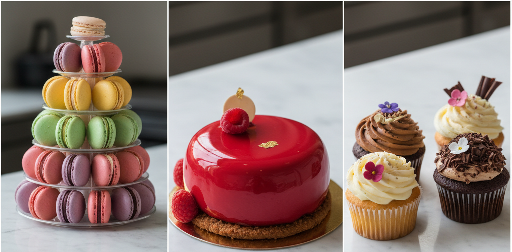
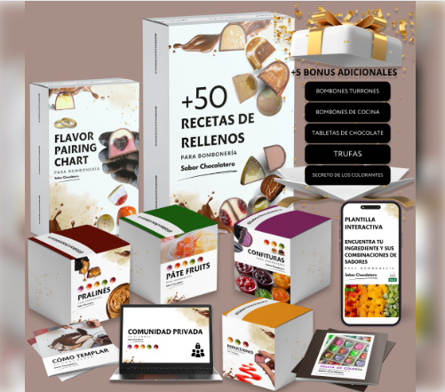
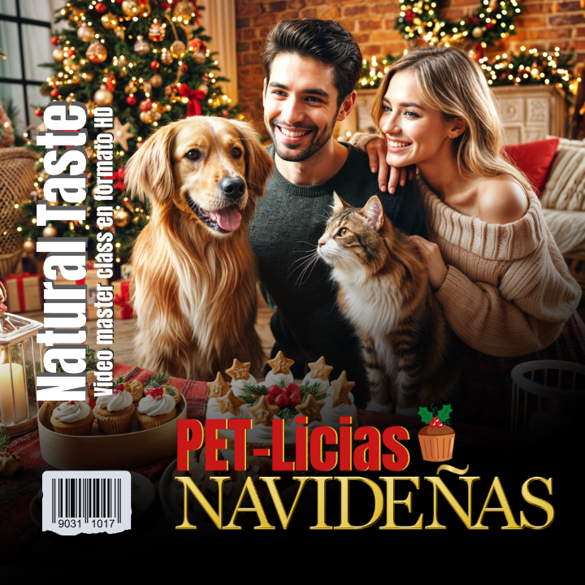

📈 ¿Por Qué Invertir en Formación de Repostería de Lujo en 2025?
El mercado de la repostería profesional y el negocio de los postres temáticos está en auge. Ya no basta con tener una buena receta; el éxito se basa en el dominio de técnicas avanzadas, el diseño estratégico y la eficiencia empresarial. Esta guía ha sido creada para ayudarte a filtrar entre cientos de opciones y elegir el camino de certificación que te asegure clientes de alto valor y un negocio próspero.
Nuestra selección se centra en cursos con acceso de por vida, certificación profesional y un fuerte componente de emprendimiento digital.
🎓 Los Mejores Cursos de Pastelería Profesional: Eleva tu Arte al Siguiente Nivel
Descubre las formaciones que te convertirán en un maestro repostero, capaz de crear postres que no solo deleitan el paladar, sino que también impresionan visualmente.
Diseñador de Pasteles: La Maestría Completa 🎂

El programa más completo para principiantes a avanzados. Domina el Diseño 3D, Tortas Talladas y el Modelado en Fondant.
Ver Contenido ClaveBocetos Digitales de Pasteles y Cake Toppers

Aprende diseño de bocetos digitales (Canva/Silhouette) y fabricación de Cake Toppers.
Más InformaciónRepostería Vegana Online: El Arte de Sustituir

Elaboración de postres, tartas y dulces sin productos de origen animal, y distintas masas saladas.
Más InformaciónDominio del Chocolate Moderno
Aprende técnicas de atemperado, bombones artísticos y esculturas de chocolate.
Más informaciónPastelería Canina y Felina: Un Nicho Innovador
Idea innovadora
Crea snacks y postres saludables (muffins, pizzas, helados) para perros y gatos.
Más InformaciónPetlicias Navideñas: Recetas para Mascotas
Idea innovadora Elaboración de snacks y postres festivos y saludables con temática navideña para mascotas.
Más InformaciónSweet Box: El Negocio de los Dulces Personalizados 🍬🎁

Aprende a crear y vender cajas de dulces temáticas y personalizadas. Incluye proveedores, gestión de costos y estrategias de marketing en redes.
Más informaciónLunch Box Gourmet: Planificación y Venta Saludable 🥗🍱

Domina la preparación de comidas equilibradas y atractivas para llevar. Incluye recetas, conservación y el modelo de negocio de suscripción semanal.
Más informaciónExplora la variedad de nuestros cursos y encuentra el que mejor se adapte a tus ambiciones. ¡Tu futuro dulce te espera!
📊 Comparativa Detallada de Cursos de Pastelería Online: Elige la Mejor Certificación
Sabemos que cada repostero tiene necesidades únicas. Hemos analizado los mejores cursos disponibles para ayudarte a tomar la decisión más inteligente, enfocándonos en el costo-beneficio y el valor curricular.

| Curso | Enfoque Principal | Nivel | Duración Estimada | Características Destacadas | Acceso |
|---|---|---|---|---|---|
| Diseñador de Pasteles | Diseño 3D, Tortas Talladas, Modelado en Fondant y 15 Módulos de Técnicas Clásicas | Apto desde Principiantes (Cubre técnicas avanzadas) | Ilimitada (Acceso de por vida al contenido en video HD) | Acceso de por vida, Certificado avalado y +8 Bonos de Recetas Exclusivas | Más Información |
| Bocetos Digitales de Pasteles y Cake Toppers | Diseño de bocetos digitales (Canva/Silhouette), fabricación de Cake Toppers (a mano o con máquina) y técnicas de diseño visual | Principiante (Diseñado para empezar desde cero) | Ilimitada (Acceso de por vida a más de 50 clases) | Más de 300 plantillas descargables, acceso a comunidad privada, actualizaciones GRATIS, certificado de finalización y 6 bonos especiales | Más Información |
| Repostería Vegana Online | Elaboración de postres, tartas y dulces sin productos de origen animal, incluyendo distintas masas saladas | Principiante (Pensado para aprender desde cero) | Ilimitada (Acceso de por vida a las clases) | Clases en video tutorial de 2 a 10 min, recetario en PDF descargable con fichas técnicas, certificado online y garantía de 7 días | Más Información |
| 50 Recetas de Rellenos para Bombonería | Recetario digital con 50 rellenos variados para bombones y trufas (ganaches, pralinés, caramelos). | Intermedio (Requiere conocimientos básicos de chocolatería) | Acceso de por vida | Recetario en PDF descargable, perfecto para ampliar tu portafolio de sabores. | Ver Recetario |
| Pastelería Canina y Felina | Elaboración de snacks, muffins, tamales, pizzas e helados saludables para perros y gatos, utilizando ingredientes caseros. Foco en nutrición y lectura de rótulos de alimentos procesados. | Para todos los amantes de animales | Acceso ilimitado | Negocio innovador con Recetas testadas por veterinario especialista en nutrición, garantía de 7 días, ayuda a emprender vendiendo las delicias. | Más Información |
| Petlicias Navideñas (Recetas para Mascotas) | Elaboración de snacks y postres festivos y saludables con temática navideña para perros y gatos. Enfoque en ingredientes de temporada aptos para mascotas. | Básico-Intermedio | Acceso de por vida | Recetario completo de postres navideños, tips de empaque para regalos/venta y garantía de 7 días. | Más Información | Sweet Box: El Negocio de los Dulces Personalizados | Programa para crear, diseñar y vender cajas de dulces temáticas y personalizadas. Incluye gestión de proveedores, costos y estrategias de marketing. | Básico-Intermedio | Acceso de por vida | Guía completa de empaque creativo, plantillas de costos y acceso al grupo de soporte exclusivo. | Más Información |
| Lunch Box Gourmet: Planificación y Venta Saludable | Curso enfocado en la preparación profesional de comidas equilibradas y atractivas para llevar (meal prep), ideal para iniciar un negocio de suscripción semanal. | Básico-Intermedio | Acceso de por vida | Recetario saludable optimizado para venta, lista de proveedores de recipientes y tips de conservación extendida. | Más Información |
Cada enlace te llevará a una descripción detallada para que puedas evaluar si es el curso ideal para ti. Invierte en tu talento y asegura tu éxito profesional.
❓ Preguntas Frecuentes sobre Cursos de Repostería Profesional Online
¿Qué diferencia un curso de Pastelería Profesional de uno básico?
La principal diferencia es el enfoque empresarial y la profundidad técnica. Los cursos profesionales cubren no solo las recetas (bizcochos, rellenos, coberturas), sino también el diseño avanzado (3D, fondant), el uso de equipamiento profesional y, crucialmente, la estratégia de costos, precios y marketing digital para convertir tu habilidad en un negocio rentable y escalable. Busque siempre programas con Certificación.
¿Es rentable invertir en Repostería Vegana o para Mascotas?
¡Absolutamente! La Repostería Vegana y la Pastelería Canina y Felina son nichos de mercado con alto valor de venta y poca competencia, lo que se traduce en márgenes de ganancia superiores. Los clientes en estos segmentos están dispuestos a pagar más por productos especializados y saludables. Son excelentes opciones para diferenciar tu marca.
¿Necesito experiencia previa para tomar estos cursos?
La mayoría de los cursos de nuestra comparativa (como el de Diseñador de Pasteles y Repostería Vegana) están diseñados para ser aptos para principiantes, escalando progresivamente hasta técnicas avanzadas. Se recomienda para personas con pasión que quieran transformar un hobby en una fuente de ingresos profesional.
🥇 Conclusión Final: El Curso más Completo para Pastelería Profesional
El curso de Diseñador de Pasteles: La Maestría Completa es, sin duda, la opción más robusta y completa en la comparativa, posicionándose como un programa de formación profesional integral y no solo un recetario avanzado.
¿Por Qué es el Más Completo? Los 3 Pilares de su Maestría
La principal razón de su superioridad radica en que combina los tres pilares necesarios para cualquier profesional exitoso en el nicho:
Dominio de la Base Técnica Clásica y Avanzada (Módulos 1-6):
No se limita a un par de recetas. El programa ofrece un extenso repertorio de 11 tipos de tortas (incluyendo Selva Negra y Choco Quesillo), 9 tipos de rellenos de alta demanda (como Ganache de Nutella y Betún de Queso Crema), y 7 tipos de coberturas (incluyendo Merengue Italiano y Ganache Mágico). Este amplio módulo asegura una base técnica impecable y versátil.
Especialización en Diseño y Arte 3D (Módulos 7-13):
Aquí es donde el curso realmente brilla. Va mucho más allá de las técnicas básicas de forrado. Incluye módulos avanzados de alto valor como:
- Montaje Estructural: Aprender a armar tortas de doble altura y 2-3 pisos.
- Tortas Talladas (3D): Técnicas complejas para crear pasteles con formas específicas (carteras, carros, calabazas).
- Figuras y Pintura en Fondant: Habilidades de modelado de caricaturas (Mickey, Pluto) y técnicas de pintura artística (Stitch, Homero).
Estas son habilidades que permiten cobrar tarifas Premium en el mercado.
Enfoque en el Negocio y Emprendimiento (Módulo 15):
Un curso profesional debe enseñarte a monetizar. Este programa incluye un módulo específico sobre "Tips para fotografiar tus pasteles", el uso estratégico de redes sociales y la edición de fotografías. Este componente es crucial para la venta online y para transformar el arte en una marca lucrativa.
En resumen, mientras otros cursos se enfocan en nichos específicos (vegana, mascotas) o técnicas aisladas (bocetos digitales), el curso Diseñador de Pasteles proporciona la base esencial, la maestría artística compleja y las herramientas empresariales para establecer un negocio de repostería de lujo desde cero.
✨ No Sueñes con el Éxito, Certifícate y Vívelo.
El camino a la maestría repostera es corto con la formación adecuada. Haz clic para descubrir los módulos detallados del mejor curso de repostería. Tu inversión en conocimiento es la mejor receta para el éxito.
✅ Acceder al mejor Curso¿Quieres Seguir Explorando?
Encuentra más guías profesionales y tu camino a la certificación con estos artículos.
➡️ ¿Cuál es la mejor batidora de pie profesional? ➡️ Impresoras comestibles ➡️ Lunch Box📖 Más Guías Esenciales y Recetas
Descubre el resto de nuestros artículos de SEO sobre tendencias, equipamiento y técnicas avanzadas de repostería.
➡️ Ver todos los Artículos